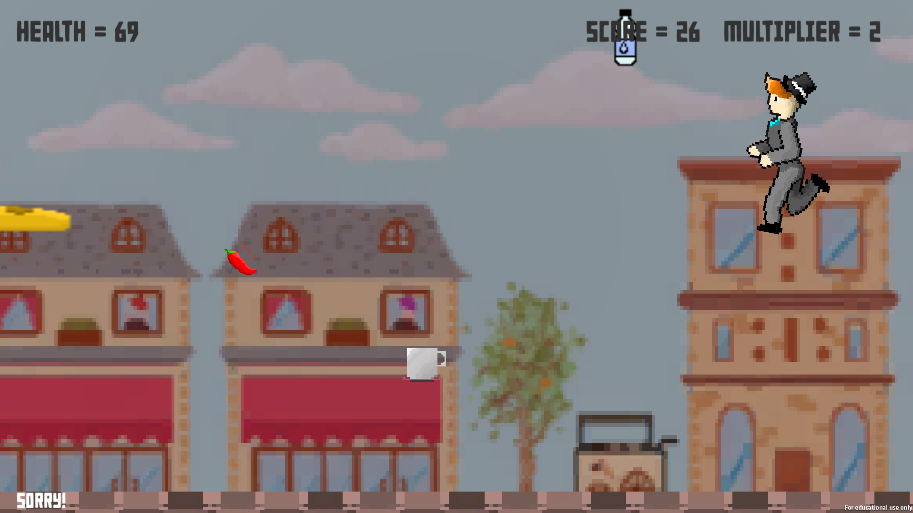

Intro
Hyper Heatwave Runner Usability Research

Hyper Heatwave Runner is an endless runner game made in Unity.
It is set from the perspective of a brit abroad in France trying to cool down in the heatwave by picking up chilling drinks and ice creams and avoiding hot chilli peppers. All this while a load of baguettes fly at your face.
This website is for documenting the usability research into this game.
Hyper Heatwave Runner repository
Intro
Hyper Heatwave Runner Usability Research
Hyper Heatwave Runner is an endless runner game made in Unity.
It is set from the perspective of a brit abroad in France trying to cool down in the heatwave by picking up chilling drinks and ice creams and avoiding hot chilli peppers. All this while a load of baguettes fly at your face.
This website is for documenting the usability research into this game.
Hyper Heatwave Runner repository
Methods
Qualitative
For my qualitative research I interviewed 5 people (3 male, 2 female) about the game.
I let each person play the game 3 times without direction before questioning them. Since the game was short, each interview lasted between 5 and 10 minutes.
I got each participant to describe what each of the items did and if they thought they were positive or negative in order to test their understanding of the game. Since some participants viewed the instructions and some didn't this also gave me an idea on the effectiveness of the instructions.
After this I asked for general feedback about what they considered to be the main problems. I also used comments made from the testers while they were playing.
Quantitative
For quantitative research I had 27 people play the game, 15 from within the Games Academy and 12 from the Acting course, 14 male, 13 female. Before they started I asked what they would rate their previous game experience as from 1 (lowest) to 5 (highest), then each of them played the game 3 times.
Before each game I made a note of which participants looked at the instructions, and for the first game I wrote down how many keys were tried before the space bar was pressed.
I wrote down the score and muliplyer of each player for each of the rounds.
Results (Raw data spreadsheed in link below)
Relationship between plays and score and multipliers:
"I expect the player to be able to improve at the game and obtain higher scores and multipliers"
To explore this relationship, I will total up the scores from all the players for each of the rounds for males, females, and overall. I will then plot out the score against the number of plays.
Overall, there was an improvement in score over time showing that players improve with playing. However, for males alone, there was actually a dip in score after the second turn. This may be because more females (9/13, 69.2%) viewed the instructions than men (7/14, 50%).
I was not expecting the result that came from the multiplier. Overall, there was a drop in the multiplier with a similar discrepancy between male and female participants to the score. Although females tended to continue getting higher multipliers, the multiplier increased less in comparison to the score.
Relationship between previous experience and score:
"Since the game is casual in nature, I expect the correlation between previous gaming experience and score to be weak"
To explore this theory I will gather a graph for the average score in relation to previous gaming experience and the highest score achieved agaisnt previous gaming experience.
The trend line may suggest a weak corellation, however from the spread of points I'm going to say that there is no correlation between previous gaming experience and mean score achieved.
This graph is very similar to the mean graph with also no correlation between highest score achieved and previous gaming experience.
Raw data spreadsheet
Conclusion
Header Point 1
Conclusion bits n bobs 1